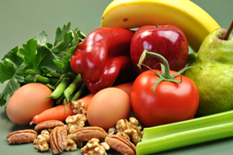

Food for Thought

Good nutrition is a lifestyle, not a diet. It starts with a new way of thinking about food. Think of your body as a vehicle that uses food for fuel. Fill your tank with the right type of fuel.
Do not approach your nutrition plan as a diet plan, but rather, a Lifestyle change. Tf you make a permanent change, you will see big results. The key to success is a daily focus on your goal.
Portion your meals and track your calories. There are many free mobile apps available to help track your activity level and calories.
Control impulsive urges to buy junk food, and instead, allow yourself to one "cheat" meal a week.
Did you know the average American consumes 3 lbs of sugar each week?
What to Eat
Use the following as guideline:
- Protein, such as eggs, chicken, and lean red meat
- Vegetables, but avoid corn and peas
- Fruit
- Fat, such as olive oil, and seeds
Limit the consumption of bread, pasta, white potatoes, and processed food. These foods are high in carbohydrates.
When you shop for groceries, shop the outside aisles and buy organic when possible. Stock up on fresh vegetables, almond flour, and flax seed.
Check out our Meal of the Week for new meal ideas.
Did you know that avocados are very good source of Vitamin B?
Meal of the Week

Herb Roasted Chicken
Ingredients:
- boneless, skinless chicken breast (organic preferred)
- 1 tsp Herbes de Provence
- 1 tsp lemon juice
- 1 tsp olive oil
- 1 tsp sea salt
- ¼ tsp pepper
Instruction:Combine all ingredients in a plastic bag and marinate for at least an hour. Preheat oven to 350 degrees. Bake chicken for 30-35 minutes or until juices run clear, Broil on high for two minutes or until brown. Serve with a fresh side salad.
Did you know the average active adult should consume 2,000 calories a day?